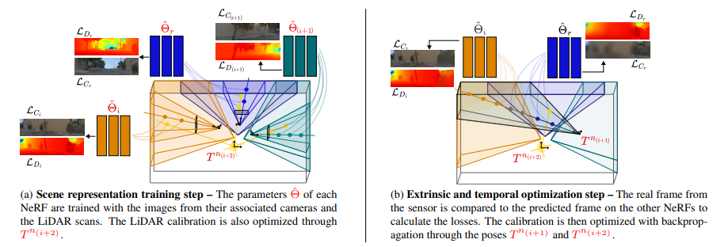

SOAC: Spatio-Temporal Overlap-Aware Multi-Sensor Calibration using Neural Radiance Fields
CVPR 2024


Calibrate where sensors see the same scene. Per-camera neural fields and overlap-aware registration connect multiple cameras and LiDAR.
Method
SOAC trains camera-specific neural fields and alternates scene fitting with sensor registration. Visibility grids restrict cross-sensor calibration to overlapping scene regions, allowing camera and LiDAR observations to contribute where they share support.


Results from the paper
LiDAR–camera calibration
The paper compares the front-left camera and LiDAR on KITTI-360, and the front camera and 360° LiDAR on PandaSet. The initial errors are 50 cm translation and 5° rotation on each axis.
| Method | KITTI-360 rotation (°) ↓ | KITTI-360 translation (cm) ↓ | PandaSet rotation (°) ↓ | PandaSet translation (cm) ↓ |
|---|---|---|---|---|
| Pandey et al. | 11.8 ± 5.4 | 143 ± 109 | 15.4 ± 0.8 | 139 ± 17.5 |
| LCCNet | 1.9 ± 0.1 | 95.8 ± 7.7 | 14.3 ± 3.4 | 370 ± 11.6 |
| MOISST | 0.2 ± 0.1 | 10.0 ± 9.8 | 2.8 ± 2.3 | 56.4 ± 17.2 |
| SOAC | 0.3 ± 0.2 | 7.8 ± 3.5 | 1.3 ± 0.8 | 29.4 ± 13.6 |
Source: original paper table ↗
Qualitative calibration results
Dataset reference (GT)


LCCNet


SOAC


Presentation
Research code
neural-calibration provides independent calibration implementations, training documentation and sensor-pose exports. avoptim-benchmark evaluates supplied poses through rendering, structure-from-motion and geometric consistency while keeping the poses fixed.
The results shown here are reported paper results. See the repositories for implementation details and validation scope.
Citation
BibTeX
@inproceedings{herau2024soac,
author = {Herau, Quentin and Piasco, Nathan and Bennehar, Moussab and Rold{\~a}o, Luis and Tsishkou, Dzmitry and Migniot, Cyrille and Vasseur, Pascal and Demonceaux, C{\'e}dric},
title = {{SOAC}: Spatio-Temporal Overlap-Aware Multi-Sensor Calibration using Neural Radiance Fields},
booktitle = {Proceedings of the IEEE/CVF Conference on Computer Vision and Pattern Recognition (CVPR)},
year = {2024},
month = {June},
pages = {15131--15140}
}